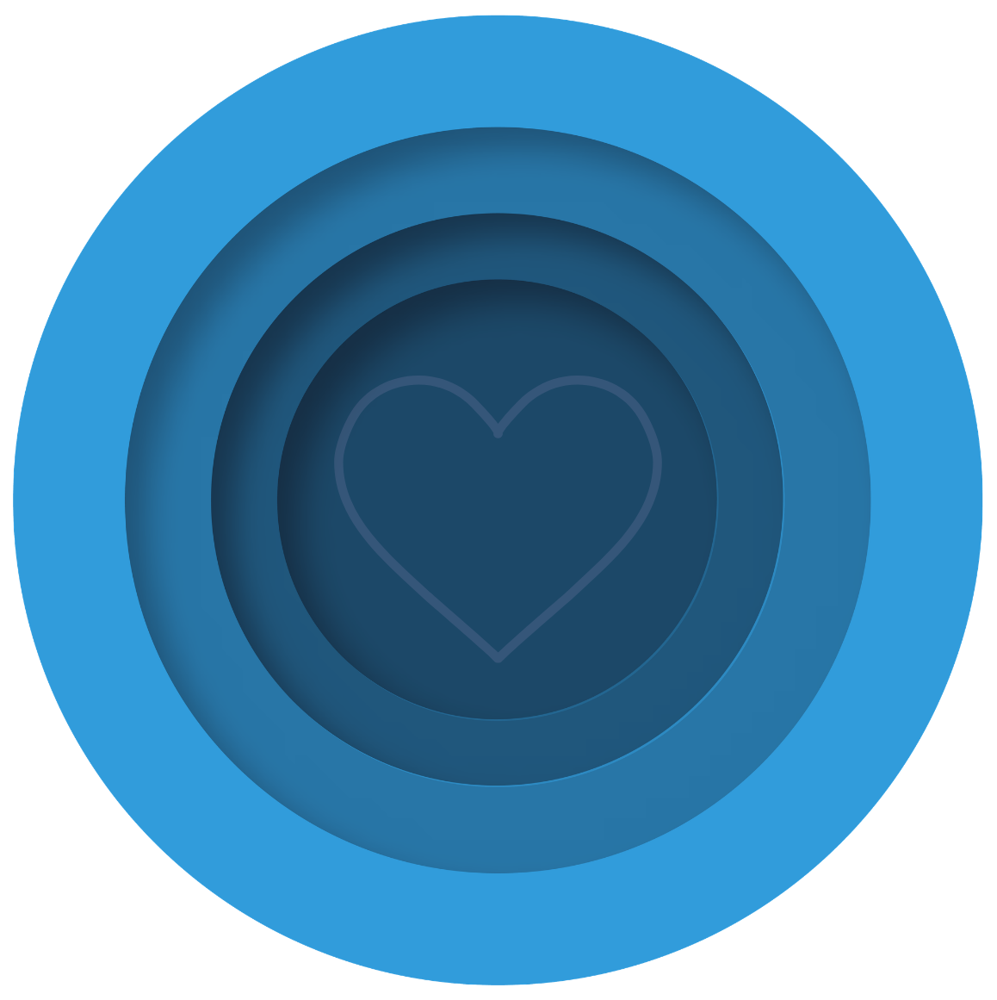

Your Post-Acute
Wound Care Partner
We are a 501(c)(6) nonprofit interprofessional team that serves as the resource and advocate for ALL post-acute care wound and skin health conditions.
What PAWSIC Stands For
We are a specialty group that understands the challenges of achieving wound and skin health outcomes in Post-Acute Care.
PAWSIC is your PAC interprofessional wound team. Our unique focus on post-acute care positions us to partner, collaborate, and support other organizations across the continuum.
What We Provide
- Accredited CE/CME webinars and courses
- Evidence-based clinical guidelines and whitepapers
- Practical resources, checklists, and handouts
- Professional community forums and SIG Spaces
- Skin Failure Library and wound care publications
- Annual conferences and industry events
- Advocacy for elevated wound care standards
Everything Starts with the Patient & Family
At the center of everything we do is the patient and their family. Every team member, every setting, every resource is oriented toward better outcomes for the people we serve.

We Represent
We Serve
Team Members We Represent
Settings We Serve
Built for the Full Care Team
PAWSIC is for everyone who touches wound and skin care outside the emergency, inpatient, or surgical setting. There is no credential requirement to join. Just a commitment to better patient outcomes.
Caregivers & CNAs
Frontline caregivers and certified nursing assistants providing hands-on wound and skin care every day at the bedside.
Nurses & Wound Clinicians
RNs, LPNs, WOC-certified nurses, and wound care specialists across all post-acute settings.
Physicians, NPs & DPMs
Medical directors, physicians, nurse practitioners, physician assistants, and podiatrists overseeing wound care programs.
Therapists (PT, OT, SLP)
Physical, occupational, and speech-language therapists involved in wound prevention, rehabilitation, and care.
Post-Acute Leaders & Operators
Directors of nursing, administrators, and leadership at SNFs, LTACs, home health agencies, hospice, and rehab facilities.
Pharmacists, Dietitians & Specialists
Pharmacists, registered dietitians, and specialists in vascular, dermatology, infectious disease, and wound technology.
Industry, Researchers & Students
Medical device representatives, wound care researchers, academia, and students advancing the science of wound care.
Social Services & Community Health
Social workers and community health workers supporting patients navigating wound care challenges and care transitions.
How to Join the Movement
Whether you are a clinician, facility leader, industry partner, or student, there is a place for you at PAWSIC. Here is how to get started.
Join Free
Create a free membership account to access the Wound Basics Course, Webinar Library, Skin Failure Library, publications, community forums, and newsletters.
Sign Up Free →Explore CE/CME
Browse accredited continuing education courses and webinars designed specifically for the post-acute wound care community. Earn credit while you learn.
View Courses →Join the Community
Connect with wound care professionals in forums and Shared Interest Groups (SIGs). Ask questions, share insights, and collaborate on best practices.
Explore Community →Upgrade to Premium
Unlock access to all CE/CME courses, SIG Spaces, clinical tools, conference discounts, and exclusive member resources for $150/year.
See Plans →Attend Events
Join annual conferences, workshops, and sponsored webinars to learn from experts, earn CE credit, and network with peers from across the country.
Upcoming Events →Become a Sponsor
Industry partners and organizations can support PAWSIC's mission through sponsorship tiers, educational sponsorships, and in-kind contributions.
Sponsorship Tiers →Ready to Join
the Community?
Connect with wound care professionals across the country. Start free. Upgrade when you see the value.
Join PAWSIC Free →